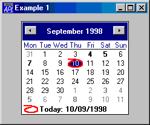
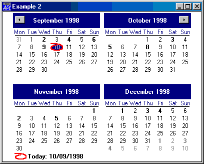
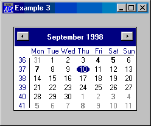

| Parents | Children | Properties | Methods | Events |
| Purpose: | The Calendar object provides an interface to the Month Calendar Control |
Description
The Calendar object displays a calendar and allows the user to select a date or range of dates. The following illustration shows a default Calendar object.

The Calendar object will display as many full months as it can fit into the area specified by its Size property as sown below.The minimum size required to encompass a single month may be obtained using the GetMinSize method.
'F'⎕WC'Form' 'Example 2'('Size' 50 50)
'F.C'⎕WC'Calendar'('Size' 100 100)
The Today property is an IDN that specifies the current day. Its default value is today's date, i.e. the local date set on your computer.
The CircleToday property is either 0 or 1 (the default) and specifies whether or not the Today date is circled when the Calendar object is showing the corresponding month.
The HasToday property is either 0 or 1 (the default) and specifies whether or not the Today date is displayed (using the Windows short date format) in the bottom left of the Calendar object.
The WeekNumbers property is either 0 (the default) or 1 and specifies whether or not the Calendar displays week numbers.
The following example shows a Calendar with both CircleToday and HasToday set to 0 and WeekNumbers set to 1.
'F'⎕WC'Form' 'Example 3'('Size' 30 30)
'F.C'⎕WC'Calendar'('CircleToday' 0)('HasToday' 0)('WeekNumbers' 1)
The FirstDay property is an integer whose value is in the range 0-6. FirstDay specifies the day that is considered to be the first day of the week and which appears first in the Calendar. The default value for FirstDay depends upon your International Settings.
The MinDate and MaxDate properties are integers that specify the minimum and maximum IDN values that the user may display and select in the Calendar object. By default these properties specify the entire range of dates that the Windows Month Calendar control can provide.
The MonthDelta property specifies the number of months by which the Calendar object scrolls when the user clicks its scroll buttons. The default is empty (zilde) which implies the number of months currently shown.
The Style property may be either 'Single' (the default) or 'Multi'. If Style is 'Single', the user may select a single date. If Style is 'Multi', the user may select a contiguous range of dates. In this case, the maximum number of contiguous days that can be selected is defined by the MaxSelCount property which is an integer whose default value is 7.
The SelDate property is a 2-element integer vector of IDN values that identifies the first and last dates that are currently selected.
When the user selects one or more dates, the Calendar object generates a SelDateChange event. This event is also generated when the Calendar object is scrolled, and the selection changes automatically to another month.
The Calendar displays day numbers using either the normal or the bold font attribute and you may specify which attribute is to be used for each day shown. However, the Calendar object does not store this information beyond the month or months currently displayed.
When the Calendar control scrolls (and potentially at other times), it generates a GetDayStates event that, in effect, asks you (the APL program) to tell it which (if any) of the dates that are about to be shown should be displayed in bold.
If you wish any dates to be displayed using the bold font attribute, you must attach a callback function to the GetDayStates event which returns this information in its result. By default, all dates are displayed using the normal font attribute, so you only need a callback function if you want any dates to be displayed in bold.
You may also set the font attribute for particular days in the range currently displayed by calling GetDayStates as a method.
The CalendarCols property specifies the colours used for various elements in the Calendar object.
You may convert dates between IDN and ⎕TS representations using the IDNToDate and DateToIDN methods. Note that these methods apply to all objects and not just to the Calendar object itself.
The GetVisibleRange method reports the range of dates that is currently visible in the Calendar object.